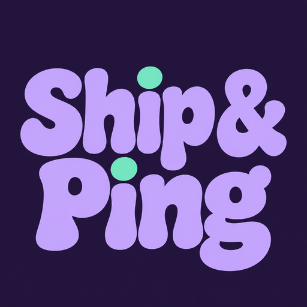

쉽앤핑 디자인 시안 비교
방향이 다른 시안 3개를 같은 흐름(S4 연결 → S5 앱 홈 → S7 문제 상세)으로 나란히 놓았다. 예시 앱은 "모임모아", 문구와 숫자는 PRD 4장 시나리오 그대로다. 사용자 흐름 전체는 docs/monitoring-service-ux.md.
1순위: 시안 C 한 문장 알림 카드
가장 중요한 한 문장을 퍼플 카드에 크게. 알림 링크로 열었을 때 가장 빨리 읽힌다.
2순위: 시안 A 조용한 상태 보드
단정한 현황판. 가장 안전하고 기능이 많아져도 버틴다.
3순위: 시안 B 양이 먼저 말해 줘요
마스코트가 대화로 안내. 개성은 가장 강하지만 매일 훑어보기엔 느리다.
시안별 설명
명도 대비 (WCAG AA)
공통으로 지킨 것
- 상태는 세 가지(괜찮아요 / 문제 있어요 / 기록을 기다려요)이고, 색과 함께 모양이 다른 아이콘과 글자를 같이 쓴다. 색을 구분하기 어려워도 읽힌다.
- 주소(
/api/...)·오류 원문·버전 값은 [자세히]와 AI에 보낼 내용 안에만 둔다.
- 누르는 곳은 최소 44×44px, 키보드 초점은 3px 테두리로 보인다. 복사 버튼은 누르면 "복사했어요"로 바뀌고 화면 읽기 프로그램에 알리며, 바뀌어 있는 동안 다시 눌러도 동작하지 않는다(중복 방지).
- 움직임은 "첫 기록 도착"과 "해결됐어요" 두 순간에만, 0.3초 안팎으로 한 번. 기기의 동작 줄이기 설정이 켜져 있으면 위치 이동 없이 투명도만 바뀐다.
- 시안은 정상 흐름만 그렸다. 로딩·빈 화면·오류 문구와 복구 경로는 흐름 문서 4장에 화면별로 정리했고, 고른 시안으로 다음 단계에서 그린다.
- 마스코트·워드마크 원본은 퍼플 배경 512px라 화면 안에서는 아이콘 타일로만 썼다. 마스코트를 크게 쓰거나 밝은 바탕에 올리려면 투명 배경 버전 필요.